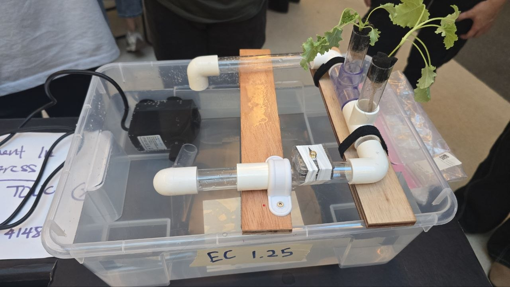
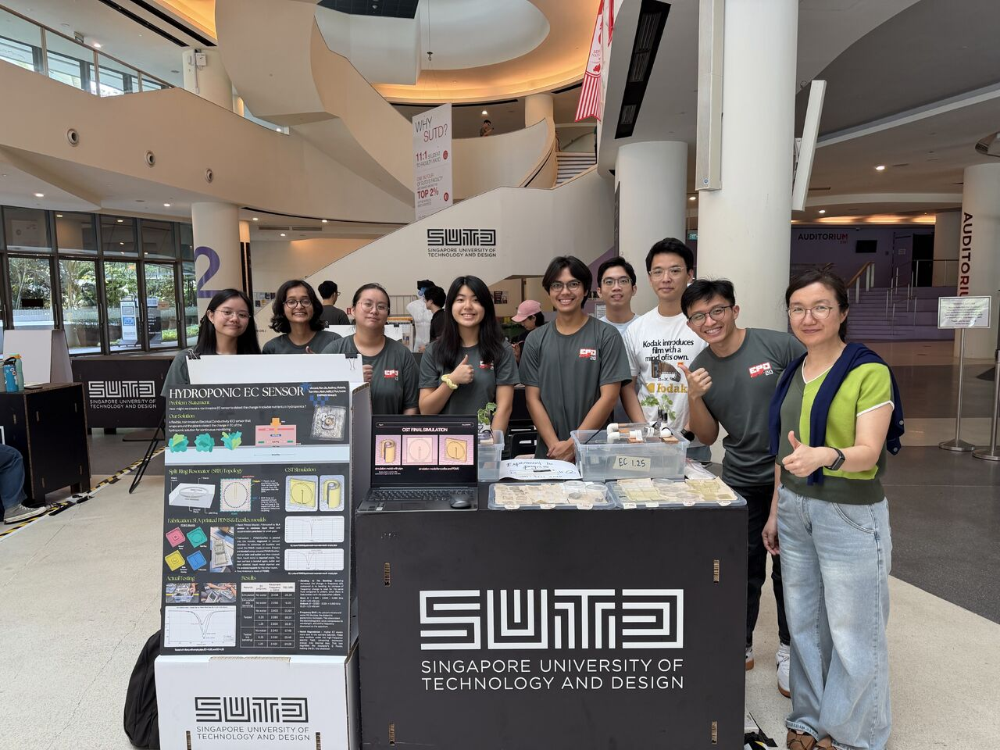
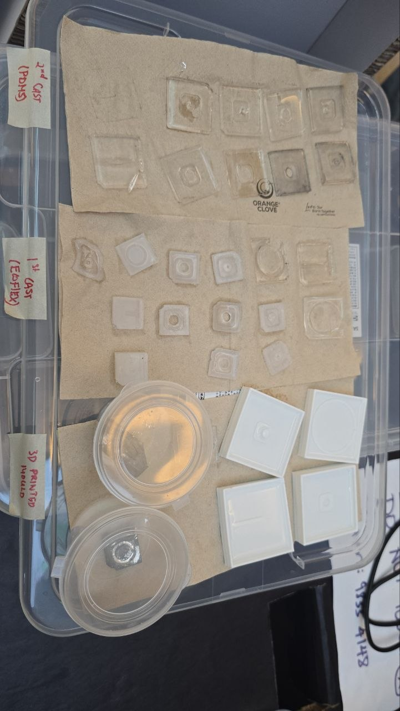
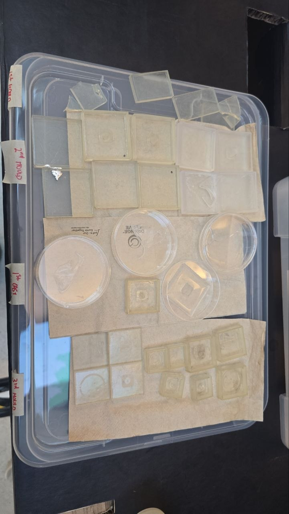

A flexible, non-invasive Electrical Conductivity (EC) sensor that wraps around a hydroponic pipe to detect changes in nutrient solution concentration, using a bent split-ring resonator cast in liquid metal and PDMS to enable continuous, contact-free monitoring.
View on GitHub View Poster View Project Review
Split Ring Resonator (SRR) with T-patch microstrip excitation
Injected liquid metal traces cast inside PDMS / Ecoflex layers
SLA resin-printed moulds for precision small-gap features
CST Studio, S1,1 return loss vs. resonant frequency
Hydroponic growers need to know when a nutrient solution's Electrical Conductivity (EC) drifts out of range, but existing probes are invasive, foul over time, and interrupt the flow they're meant to monitor. Our question: how might we create a non-invasive EC sensor to detect the change in soluble nutrients in hydroponics? The answer is a flexible sensor that wraps around the outside of the pipe itself — a split-ring resonator whose resonant frequency shifts as the EC of the fluid flowing past it changes, with no contact with the solution required.

The T-patch is an excitation source that carries the RF current from the SMA port into the SRR, coupling energy into the ring.
The ring acts as an LC resonant circuit — the ring itself is the inductor and the split gap is the capacitor — coupling magnetically to the fluid it wraps around.
A ground plane backs the microstrip while the whole assembly wraps around a PVC tube carrying the hydroponic water flow, keeping the sensor entirely external to the fluid path.


| Condition | EC (mS/cm) | Resonant Frequency (GHz) | S1,1 (dB) |
|---|---|---|---|
| Simulated | No water | 2.408 | -20.24 |
| Simulated (no bending) | No water | 2.096 | -6.00 |
| Tested | No water | 2.605 | -21.60 |
| Tested | 0.25 | 2.590 | -18.30 |
| Tested | 1.25 | 2.500 | -10.57 |
| Tested (no bending) | No water | 2.040 | -17.48 |
| Tested (no bending) | 0.25 | 2.033 | -15.46 |
| Tested (no bending) | 1.25 | 2.024 | -10.28 |
Bending the sensor around the pipe increases the change in resonant frequency (Δf) compared to leaving it unbent, since bending gives the ring more contact with the pipe. Between EC 0.25 and 1.25 mS/cm, the bent sensor shifted Δf = 2.590 − 2.500 = 0.090 GHz, versus only Δf = 2.033 − 2.024 = 0.009 GHz unbent — a 10x greater sensitivity from bending.
As calcium nitrate and water fill the pipe, the dielectric permittivity around the resonator increases. This slows the electromagnetic wave and compresses its wavelength, shifting the resonant frequency downward as EC rises.
Higher EC means more ions in the nutrient solution. These ions oscillate under the high-frequency electric field, converting microwave energy into thermal loss. This degrades the resonator's Q factor, making the S1,1 dip shallower at higher EC.
Simulated and tested resonant frequencies tracked closely for the bent, empty-pipe case (2.408 GHz vs 2.605 GHz), validating the CST model, while the unbent simulation's shallow -6.00 dB return loss showed why bending was needed for a usable notch depth on the bench.